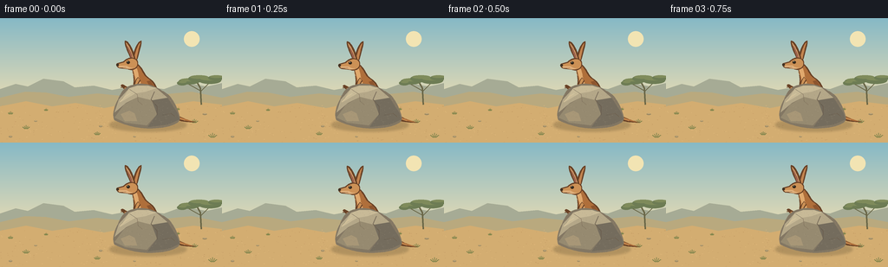
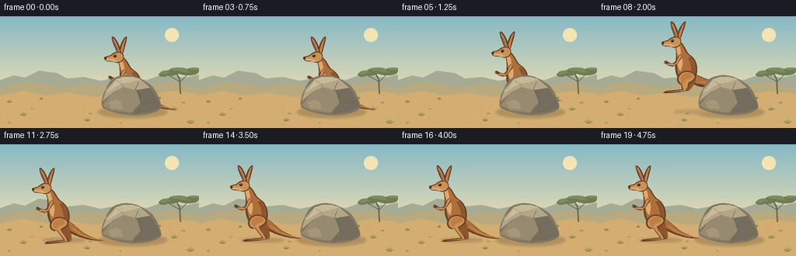
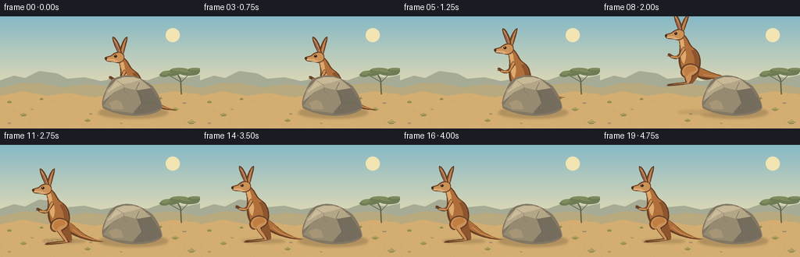

CODING AGENTS AS PIXEL WORLD MODELS
traex/GPT-6.1-Sol · dynamic_spatial_relationship_0035
点击播放 · 原生 RGB 像素
逐轮保存的候选
回放视频、检查图与代码变化。
每份候选均可单独播放。实际图片检查记录在下方工具轨迹中。
候选 01播放与检查图
点击播放 · 原生 RGB 像素


展开代码变化
--- 上一保存版本
+++ 本次保存版本
@@ -0,0 +1,173 @@
+from pathlib import Path
+import math
+import numpy as np
+from PIL import Image, ImageDraw, ImageFilter
+import artifact_io
+
+ROOT=Path(__file__).resolve().parent
+W,H,S=256,144,4
+rng=np.random.default_rng(312)
+
+def path_points(seq):
+ pts=[]; p=None
+ for cmd in seq:
+ if cmd[0]=='M': p=cmd[1:]; pts.append(p)
+ elif cmd[0]=='L': p=cmd[1:]; pts.append(p)
+ elif cmd[0]=='C':
+ a=p; b=cmd[1:3]; c=cmd[3:5]; e=cmd[5:7]
+ for t in np.linspace(0,1,17)[1:]:
+ pts.append(((1-t)**3*a[0]+3*(1-t)**2*t*b[0]+3*(1-t)*t*t*c[0]+t**3*e[0],(1-t)**3*a[1]+3*(1-t)**2*t*b[1]+3*(1-t)*t*t*c[1]+t**3*e[1]))
+ p=e
+ return pts
+
+def poly(draw,pts,fill): draw.polygon([(round(x*S),round(y*S)) for x,y in pts],fill=fill)
+def ellipse(draw,box,fill): draw.ellipse(tuple(round(v*S) for v in box),fill=fill)
+def line(draw,pts,fill,width=1): draw.line([(round(x*S),round(y*S)) for x,y in pts],fill=fill,width=max(1,round(width*S)),joint='curve')
+
+# Warm sunlight and a restrained, layered Australian landscape.
+a=np.zeros((H*S,W*S,3),dtype=np.uint8)
+for yy in range(H*S):
+ y=yy/S
+ if y<93:
+ t=y/93; col=np.array([134,185,198])*(1-t)+np.array([227,218,180])*t
+ else:
+ t=(y-93)/51; col=np.array([192,153,101])*(1-t)+np.array([221,180,117])*t
+ a[yy]=np.clip(col,0,255)
+bg=Image.fromarray(a)
+d=ImageDraw.Draw(bg)
+ellipse(d,(212,15,230,33),(242,228,179))
+# Far mesas and overlapping dune silhouettes.
+poly(d,[(0,82),(18,76),(32,79),(50,70),(73,73),(86,80),(108,78),(129,83),(157,78),(189,82),(211,74),(238,79),(256,75),(256,104),(0,104)],(166,171,149))
+poly(d,[(0,92),(29,85),(53,86),(79,91),(112,87),(141,90),(164,85),(189,88),(221,85),(256,92),(256,107),(0,107)],(185,169,126))
+poly(d,[(0,102),(30,96),(60,102),(87,98),(120,104),(151,98),(180,103),(223,96),(256,100),(256,144),(0,144)],(211,173,113))
+# Distant acacia at the right edge.
+line(d,[(232,100),(231,81),(226,72)],(104,101,70),1.8)
+line(d,[(231,85),(241,75),(246,71)],(104,101,70),1.1)
+line(d,[(231,84),(215,75)],(104,101,70),1)
+for x,y,rx,ry in [(218,73,12,3.5),(229,70,12,4),(242,72,13,4),(249,69,9,3),(210,75,6,2.7)]:
+ ellipse(d,(x-rx,y-ry,x+rx,y+ry),(109,124,84))
+ ellipse(d,(x-rx+2,y-ry,x+rx-1,y),(127,139,91))
+# Fine warm earth flecks, small stones, and sparse grasses.
+for _ in range(310):
+ x=float(rng.uniform(0,256)); y=float(rng.uniform(101,144)); r=float(rng.uniform(.18,.65))
+ c=[(192,150,96),(226,186,124),(201,162,106)][int(rng.integers(3))]
+ ellipse(d,(x,y,x+r*2,y+r*.45),c)
+for x,y,sc in [(12,111,.7),(30,128,1.0),(112,135,.9),(224,121,1),(245,138,1.2),(205,106,.5),(53,107,.5)]:
+ for off in [-4,-2,0,2,4]:
+ line(d,[(x+off*.4,y),(x+off*sc,y-(4.3-abs(off)*.5)*sc)],(121,129,73),.65)
+for x,y,r in [(12,137,2),(41,119,1.8),(116,125,2),(236,111,2.4),(155,137,1.5)]:
+ ellipse(d,(x-r,y-r*.45,x+r,y+r*.45),(156,137,99));line(d,[(x-r*.5,y-r*.3),(x+r*.6,y-r*.3)],(215,188,138),.5)
+
+# Static sandstone boulder, built on a transparent layer so it naturally
+# occludes the kangaroo when it is behind it.
+rock=Image.new('RGBA',bg.size,(0,0,0,0));rd=ImageDraw.Draw(rock)
+rock_outline=[('M',132,118),('C',128,112,133,99,136,94),('C',140,83,146,78,154,77),('C',164,73,179,78,187,84),('C',197,88,204,101,207,114),('C',210,121,196,126,183,127),('C',164,129,146,125,132,118)]
+poly(rd,path_points(rock_outline),(131,119,99,255))
+poly(rd,[(132,109),(137,94),(149,81),(161,78),(179,80),(193,92),(175,95),(159,91),(145,98)],(180,167,136,255))
+poly(rd,[(149,81),(158,78),(171,78),(180,81),(168,85),(156,87),(139,97)],(200,186,151,255))
+poly(rd,[(159,91),(175,95),(181,111),(169,124),(145,121),(132,115),(143,100)],(150,138,112,255))
+poly(rd,[(175,95),(193,92),(204,109),(207,117),(194,123),(170,126),(181,111)],(116,108,93,255))
+poly(rd,[(139,111),(149,107),(155,110),(158,119),(144,119)],(168,151,119,255))
+line(rd,[(149,82),(158,88),(159,96),(164,100)],(125,117,100,220),.6)
+line(rd,[(178,85),(174,94),(181,102),(181,112)],(100,96,84,220),.65)
+line(rd,[(187,112),(197,110),(202,114)],(87,87,78,190),.6)
+line(rd,[(138,97),(145,90),(150,87)],(219,201,162,200),.9)
+# Textural mineral marks clipped to boulder.
+mask=Image.new('L',bg.size,0);md=ImageDraw.Draw(mask);poly(md,path_points(rock_outline),255)
+tex=Image.new('RGBA',bg.size,(0,0,0,0));td=ImageDraw.Draw(tex)
+for _ in range(380):
+ x=float(rng.uniform(131,206));y=float(rng.uniform(78,126));v=int(rng.integers(100,220))
+ ellipse(td,(x,y,x+float(rng.uniform(.2,.8)),y+.22),(v,int(v*.94),int(v*.8),55))
+tex.putalpha(Image.fromarray(np.minimum(np.array(tex.getchannel('A')),np.array(mask))))
+rock=Image.alpha_composite(rock,tex)
+
+
+def animal(image,x,hip,fold=0,air=0,breath=0):
+ d=ImageDraw.Draw(image)
+ def tr(p):
+ xx,yy=p
+ # Small forward lean during take-off, retaining the long-eared silhouette.
+ xx+=air*max(-yy,0)*.075
+ yy+=breath*(max(-yy,0)/60)
+ return (x+xx,hip+yy)
+ def shape(seq,c):poly(d,[tr(p) for p in path_points(seq)],c)
+ def ln(pts,c,w=.7):line(d,[tr(p) for p in pts],c,w)
+ def el(box,c):
+ p=tr((box[0],box[1]));q=tr((box[2],box[3]));ellipse(d,(*p,*q),c)
+ edge=(104,65,38);tan=(175,111,59);light=(204,145,86);hi=(224,169,109);shade=(141,85,46)
+ # Tail: thick at the rump, long and gradually tapering to a pointed tip.
+ shape([('M',4,-2),('C',18,3,24,15-air*8,37,20-air*10),('C',43,23-air*10,49,25-air*12,55,26-air*12),('C',45,27-air*12,35,25-air*9,26,22-air*7),('C',17,19,7,14,-1,7)],edge)
+ shape([('M',6,-1),('C',19,5,24,16-air*8,38,21-air*10),('L',53,26-air*12),('C',36,24-air*9,23,20-air*6,11,12),('L',0,5)],tan)
+ ln([(15,10),(26,18-air*7),(42,24-air*11)],light,.9)
+ # Far folded hind leg.
+ knee=(-1-7*fold,12-3*fold);ank=(8-16*fold,24-8*fold);foot=(-9-15*fold,28-8*fold)
+ shape([('M',2,0),('C',-8,4,-8,12,*knee),('L',*ank),('L',*foot),('L',foot[0]-3,foot[1]+2),('L',ank[0]+5,ank[1]+3),('C',ank[0]+8,ank[1],11,9,10,4)],shade)
+ # Far forearm.
+ shape([('M',-10,-27),('C',-16,-21,-17,-14,-23,-14),('L',-29,-17),('L',-31,-15),('C',-22,-9,-19,-10,-16,-12),('L',-6,-23)],shade)
+ # Main trunk, slim upright neck and strong lower body.
+ shape([('M',-12,-41),('C',-5,-35,-5,-28,2,-24),('C',11,-18,14,-4,9,6),('C',5,13,-6,14,-12,6),('C',-19,-4,-17,-15,-17,-24),('C',-18,-31,-18,-34,-20,-37)],edge)
+ shape([('M',-13,-40),('C',-7,-35,-7,-28,0,-24),('C',8,-18,12,-6,7,5),('C',4,11,-6,11,-10,5),('C',-16,-3,-15,-18,-16,-25),('C',-17,-31,-17,-35,-18,-37)],tan)
+ shape([('M',-14,-37),('C',-11,-32,-12,-27,-10,-22),('C',-7,-17,-8,-10,-10,-4),('C',-15,-8,-15,-18,-15,-25),('L',-18,-35)],hi)
+ shape([('M',2,-22),('C',9,-13,11,-4,6,6),('L',2,9),('C',6,-4,3,-14,-2,-21)],shade)
+ # Large rounded near thigh and the long kangaroo hind foot.
+ kx=-6-5*fold;ky=12-3*fold; ax=4-16*fold;ay=25-8*fold; fx=-19-15*fold;fy=28-8*fold
+ shape([('M',4,-3),('C',-3,-8,-15,-1,-14,7),('C',-14,13,-6,16,kx,ky),('L',ax,ay),('C',ax-5,ay+1,fx+2,fy-1,fx,fy),('L',fx-2,fy+2),('C',fx+6,fy+3,ax+3,ay+3,ax+6,ay+2),('C',ax+7,ay-2,0,17,2,12),('C',13,6,12,0,4,-3)],edge)
+ shape([('M',3,-2),('C',-5,-5,-12,0,-12,7),('C',-11,13,-5,13,kx+1,ky),('L',ax+2,ay+1),('L',fx,fy+1),('L',ax+4,ay+2),('C',ax+6,ay-1,0,16,0,11),('C',11,6,10,0,3,-2)],light)
+ shape([('M',4,-1),('C',-1,-3,-8,-1,-10,5),('C',-9,10,-7,11,-5,11),('C',-4,5,4,7,6,3)],(192,126,66))
+ ln([(fx+1,fy+1),(fx+5,fy+1)],(88,60,36),.65)
+ # Near small forelimb and delicate fingers.
+ shape([('M',-12,-26),('C',-17,-21,-15,-17,-19,-13),('L',-26,-15),('C',-29,-18,-31,-18,-32,-16),('L',-28,-12),('C',-24,-10,-19,-9,-16,-12),('L',-9,-22)],edge)
+ shape([('M',-12,-25),('C',-16,-20,-14,-17,-18,-13),('L',-27,-14),('L',-28,-12),('L',-19,-11),('L',-16,-13),('L',-10,-23)],light)
+ ln([(-29,-14),(-32,-14)],edge,.7)
+ # Far and near ears, tall narrow rabbit-like ears with warm pink interiors.
+ shape([('M',-14,-43),('C',-12,-49,-7,-65,-8,-68),('C',-12,-69,-19,-53,-19,-44)],edge)
+ shape([('M',-14,-45),('C',-13,-52,-10,-64,-9,-66),('C',-12,-65,-16,-52,-17,-45)],(195,132,79))
+ shape([('M',-19,-44),('C',-22,-51,-29,-65,-27,-68),('C',-23,-69,-16,-56,-15,-46)],edge)
+ shape([('M',-19,-46),('C',-22,-54,-26,-65,-26,-66),('C',-23,-64,-18,-53,-17,-47)],hi)
+ shape([('M',-20,-48),('L',-25,-64),('C',-22,-59,-19,-53,-18,-48)],(156,98,78))
+ # Long face, black eye, nostril, and pale muzzle.
+ shape([('M',-17,-48),('C',-22,-50,-27,-46,-29,-44),('L',-36,-42),('C',-38,-41,-37,-37,-33,-36),('L',-24,-35),('C',-17,-32,-11,-37,-12,-42),('C',-12,-46,-14,-47,-17,-48)],edge)
+ shape([('M',-17,-47),('C',-22,-48,-26,-45,-28,-43),('L',-35,-41),('L',-35,-38),('L',-26,-37),('C',-19,-33,-12,-37,-13,-42),('C',-13,-44,-14,-46,-17,-47)],light)
+ shape([('M',-34,-39),('L',-25,-39),('C',-22,-37,-20,-36,-18,-37),('C',-21,-34,-25,-36,-28,-36),('L',-34,-37)],(222,174,122))
+ el((-25.2,-44.7,-21.2,-41.1),(84,56,32));el((-24.8,-44.5,-22,-41.8),(34,31,25));el((-24.1,-44.1,-23.3,-43.3),(246,226,178))
+ el((-37,-41.3,-33.9,-38.8),(61,48,34))
+ ln([(-34,-36.8),(-29,-36.8),(-26,-37.3)],(115,76,47),.55)
+ ln([(-19,-32),(-17,-28)],(229,174,108),.5)
+
+frames=[]
+for i in range(20):
+ im=bg.copy()
+ if i<=3:
+ x=171; hip=94+math.sin(i*1.2)*.6;fold=0;air=0
+ elif i==4:
+ x=169;hip=100;fold=.3;air=.1
+ elif i<=11:
+ t=(i-4)/7
+ x=169-91*t
+ hip=98-34*math.sin(math.pi*t)
+ fold=.75*math.sin(math.pi*t)
+ air=math.sin(math.pi*t)
+ elif i==12:
+ x=78;hip=101;fold=.32;air=0
+ elif i==13:
+ x=77;hip=97;fold=.10;air=0
+ else:
+ x=77;hip=95+math.sin((i-14)*.65)*.35;fold=0;air=0
+ # Soft contact shadows remain grounded during the airborne jump.
+ shadows=Image.new('RGBA',im.size,(0,0,0,0));sd=ImageDraw.Draw(shadows)
+ ellipse(sd,(126,116,215,131),(76,65,41,65))
+ elevation=max(0,95-hip)
+ ellipse(sd,(x-23+elevation*.2,121-elevation*.025,x+32-elevation*.2,126-elevation*.025),(77,63,39,int(62-elevation)))
+ shadows=shadows.filter(ImageFilter.GaussianBlur(S*1.4));im=Image.alpha_composite(im.convert('RGBA'),shadows).convert('RGB')
+ animal(im,x,hip,fold,air,math.sin(i*.7)*.25)
+ im=Image.alpha_composite(im.convert('RGBA'),rock).convert('RGB')
+ # Gentle short-lived dust after the landing, not a motion trail.
+ if 11<=i<=15:
+ dust=Image.new('RGBA',im.size,(0,0,0,0));dd=ImageDraw.Draw(dust)
+ t=i-11
+ for dx,dy,r in [(-19,0,3),(-8,-1,3.7),(13,0,2.5)]:
+ ellipse(dd,(78+dx-t- r-t*.7,123+dy-t*.7-r*.3,78+dx-t+r+t*.7,124+dy-t*.7+r*.3),(231,195,141,max(0,75-t*15)))
+ dust=dust.filter(ImageFilter.GaussianBlur(S*.7));im=Image.alpha_composite(im.convert('RGBA'),dust).convert('RGB')
+ frames.append(np.asarray(im.resize((W,H),Image.Resampling.LANCZOS),dtype=np.uint8))
+artifact_io.save(np.stack(frames),ROOT)
+print('Saved 20 RGB frames and player artifacts.')
候选 02播放与检查图
点击播放 · 原生 RGB 像素

展开代码变化
--- 上一保存版本
+++ 本次保存版本
@@ -144,7 +144,7 @@
elif i<=11:
t=(i-4)/7
x=169-91*t
- hip=98-34*math.sin(math.pi*t)
+ hip=98-24*math.sin(math.pi*t)
fold=.75*math.sin(math.pi*t)
air=math.sin(math.pi*t)
elif i==12:
可观测工具轨迹
实际执行的命令与返回图片。
命令 1exit 0
/bin/bash -lc 'ls -la && cat prompt.txt && cat GENERATION_RULES.md && cat task_spec.json'
命令 2exit 0
/bin/bash -lc 'cat artifact_io.py'
命令 3exit 0
/bin/bash -lc "python - <<'PY' import PIL,numpy print(PIL.__version__) PY"
命令 4exit 0
/bin/bash -lc "cat > generate.py <<'PY'
from pathlib import Path
import math
import numpy as np
from PIL import Image, ImageDraw, ImageFilter
import artifact_io
ROOT=Path(__file__).resolve().parent
W,H,S=256,144,4
rng=np.random.default_rng(312)
def path_points(seq):
pts=[]; p=None
for cmd in seq:
if cmd[0]=='M': p=cmd[1:]; pts.append(p)
elif cmd[0]=='L': p=cmd[1:]; pts.append(p)
elif cmd[0]=='C':
a=p; b=cmd[1:3]; c=cmd[3:5]; e=cmd[5:7]
for t in np.linspace(0,1,17)[1:]:
pts.append(((1-t)**3*a[0]+3*(1-t)**2*t*b[0]+3*(1-t)*t*t*c[0]+t**3*e[0],(1-t)**3*a[1]+3*(1-t)**2*t*b[1]+3*(1-t)*t*t*c[1]+t**3*e[1]))
p=e
return pts
def poly(draw,pts,fill): draw.polygon([(round(x*S),round(y*S)) for x,y in pts],fill=fill)
def ellipse(draw,box,fill): draw.ellipse(tuple(round(v*S) for v in box),fill=fill)
def line(draw,pts,fill,width=1): draw.line([(round(x*S),round(y*S)) for x,y in pts],fill=fill,width=max(1,round(width*S)),joint='curve')
# Warm sunlight and a restrained, layered Australian landscape.
a=np.zeros((H*S,W*S,3),dtype=np.uint8)
for yy in range(H*S):
y=yy/S
if y<93:
t=y/93; col=np.array([134,185,198])*(1-t)+np.array([227,218,180])*t
else:
t=(y-93)/51; col=np.array([192,153,101])*(1-t)+np.array([221,180,117])*t
a[yy]=np.clip(col,0,255)
bg=Image.fromarray(a)
d=ImageDraw.Draw(bg)
ellipse(d,(212,15,230,33),(242,228,179))
# Far mesas and overlapping dune silhouettes.
poly(d,[(0,82),(18,76),(32,79),(50,70),(73,73),(86,80),(108,78),(129,83),(157,78),(189,82),(211,74),(238,79),(256,75),(256,104),(0,104)],(166,171,149))
poly(d,[(0,92),(29,85),(53,86),(79,91),(112,87),(141,90),(164,85),(189,88),(221,85),(256,92),(256,107),(0,107)],(185,169,126))
poly(d,[(0,102),(30,96),(60,102),(87,98),(120,104),(151,98),(180,103),(223,96),(256,100),(256,144),(0,144)],(211,173,113))
# Distant acacia at the right edge.
line(d,[(232,100),(231,81),(226,72)],(104,101,70),1.8)
line(d,[(231,85),(241,75),(246,71)],(104,101,70),1.1)
line(d,[(231,84),(215,75)],(104,101,70),1)
for x,y,rx,ry in [(218,73,12,3.5),(229,70,12,4),(242,72,13,4),(249,69,9,3),(210,75,6,2.7)]:
ellipse(d,(x-rx,y-ry,x+rx,y+ry),(109,124,84))
ellipse(d,(x-rx+2,y-ry,x+rx-1,y),(127,139,91))
# Fine warm earth flecks, small stones, and sparse grasses.
for _ in range(310):
x=float(rng.uniform(0,256)); y=float(rng.uniform(101,144)); r=float(rng.uniform(.18,.65))
c=[(192,150,96),(226,186,124),(201,162,106)][int(rng.integers(3))]
ellipse(d,(x,y,x+r*2,y+r*.45),c)
for x,y,sc in [(12,111,.7),(30,128,1.0),(112,135,.9),(224,121,1),(245,138,1.2),(205,106,.5),(53,107,.5)]:
for off in [-4,-2,0,2,4]:
line(d,[(x+off*.4,y),(x+off*sc,y-(4.3-abs(off)*.5)*sc)],(121,129,73),.65)
for x,y,r in [(12,137,2),(41,119,1.8),(116,125,2),(236,111,2.4),(155,137,1.5)]:
ellipse(d,(x-r,y-r*.45,x+r,y+r*.45),(156,137,99));line(d,[(x-r*.5,y-r*.3),(x+r*.6,y-r*.3)],(215,188,138),.5)
# Static sandstone boulder, built on a transparent layer so it naturally
# occludes the kangaroo when it is behind it.
rock=Image.new('RGBA',bg.size,(0,0,0,0));rd=ImageDraw.Draw(rock)
rock_outline=[('M',132,118),('C',128,112,133,99,136,94),('C',140,83,146,78,154,77),('C',164,73,179,78,187,84),('C',197,88,204,101,207,114),('C',210,121,196,126,183,127),('C',164,129,146,125,132,118)]
poly(rd,path_points(rock_outline),(131,119,99,255))
poly(rd,[(132,109),(137,94),(149,81),(161,78),(179,80),(193,92),(175,95),(159,91),(145,98)],(180,167,136,255))
poly(rd,[(149,81),(158,78),(171,78),(180,81),(168,85),(156,87),(139,97)],(200,186,151,255))
poly(rd,[(159,91),(175,95),(181,111),(169,124),(145,121),(132,115),(143,100)],(150,138,112,255))
poly(rd,[(175,95),(193,92),(204,109),(207,117),(194,123),(170,126),(181,111)],(116,108,93,255))
poly(rd,[(139,111),(149,107),(155,110),(158,119),(144,119)],(168,151,119,255))
line(rd,[(149,82),(158,88),(159,96),(164,100)],(125,117,100,220),.6)
line(rd,[(178,85),(174,94),(181,102),(181,112)],(100,96,84,220),.65)
line(rd,[(187,112),(197,110),(202,114)],(87,87,78,190),.6)
line(rd,[(138,97),(145,90),(150,87)],(219,201,162,200),.9)
# Textural mineral marks clipped to boulder.
mask=Image.new('L',bg.size,0);md=ImageDraw.Draw(mask);poly(md,path_points(rock_outline),255)
tex=Image.new('RGBA',bg.size,(0,0,0,0));td=ImageDraw.Draw(tex)
for _ in range(380):
x=float(rng.uniform(131,206));y=float(rng.uniform(78,126));v=int(rng.integers(100,220))
ellipse(td,(x,y,x+float(rng.uniform(.2,.8)),y+.22),(v,int(v*.94),int(v*.8),55))
tex.putalpha(Image.fromarray(np.minimum(np.array(tex.getchannel('A')),np.array(mask))))
rock=Image.alpha_composite(rock,tex)
def animal(image,x,hip,fold=0,air=0,breath=0):
d=ImageDraw.Draw(image)
def tr(p):
xx,yy=p
# Small forward lean during take-off, retaining the long-eared silhouette.
xx+=air*max(-yy,0)*.075
yy+=breath*(max(-yy,0)/60)
return (x+xx,hip+yy)
def shape(seq,c):poly(d,[tr(p) for p in path_points(seq)],c)
def ln(pts,c,w=.7):line(d,[tr(p) for p in pts],c,w)
def el(box,c):
p=tr((box[0],box[1]));q=tr((box[2],box[3]));ellipse(d,(*p,*q),c)
edge=(104,65,38);tan=(175,111,59);light=(204,145,86);hi=(224,169,109);shade=(141,85,46)
# Tail: thick at the rump, long and gradually tapering to a pointed tip.
shape([('M',4,-2),('C',18,3,24,15-air*8,37,20-air*10),('C',43,23-air*10,49,25-air*12,55,26-air*12),('C',45,27-air*12,35,25-air*9,26,22-air*7),('C',17,19,7,14,-1,7)],edge)
shape([('M',6,-1),('C',19,5,24,16-air*8,38,21-air*10),('L',53,26-air*12),('C',36,24-air*9,23,20-air*6,11,12),('L',0,5)],tan)
ln([(15,10),(26,18-air*7),(42,24-air*11)],light,.9)
# Far folded hind leg.
knee=(-1-7*fold,12-3*fold);ank=(8-16*fold,24-8*fold);foot=(-9-15*fold,28-8*fold)
shape([('M',2,0),('C',-8,4,-8,12,*knee),('L',*ank),('L',*foot),('L',foot[0]-3,foot[1]+2),('L',ank[0]+5,ank[1]+3),('C',ank[0]+8,ank[1],11,9,10,4)],shade)
# Far forearm.
shape([('M',-10,-27),('C',-16,-21,-17,-14,-23,-14),('L',-29,-17),('L',-31,-15),('C',-22,-9,-19,-10,-16,-12),('L',-6,-23)],shade)
# Main trunk, slim upright neck and strong lower body.
shape([('M',-12,-41),('C',-5,-35,-5,-28,2,-24),('C',11,-18,14,-4,9,6),('C',5,13,-6,14,-12,6),('C',-19,-4,-17,-15,-17,-24),('C',-18,-31,-18,-34,-20,-37)],edge)
shape([('M',-13,-40),('C',-7,-35,-7,-28,0,-24),('C',8,-18,12,-6,7,5),('C',4,11,-6,11,-10,5),('C',-16,-3,-15,-18,-16,-25),('C',-17,-31,-17,-35,-18,-37)],tan)
shape([('M',-14,-37),('C',-11,-32,-12,-27,-10,-22),('C',-7,-17,-8,-10,-10,-4),('C',-15,-8,-15,-18,-15,-25),('L',-18,-35)],hi)
shape([('M',2,-22),('C',9,-13,11,-4,6,6),('L',2,9),('C',6,-4,3,-14,-2,-21)],shade)
# Large rounded near thigh and the long kangaroo hind foot.
kx=-6-5*fold;ky=12-3*fold; ax=4-16*fold;ay=25-8*fold; fx=-19-15*fold;fy=28-8*fold
shape([('M',4,-3),('C',-3,-8,-15,-1,-14,7),('C',-14,13,-6,16,kx,ky),('L',ax,ay),('C',ax-5,ay+1,fx+2,fy-1,fx,fy),('L',fx-2,fy+2),('C',fx+6,fy+3,ax+3,ay+3,ax+6,ay+2),('C',ax+7,ay-2,0,17,2,12),('C',13,6,12,0,4,-3)],edge)
shape([('M',3,-2),('C',-5,-5,-12,0,-12,7),('C',-11,13,-5,13,kx+1,ky),('L',ax+2,ay+1),('L',fx,fy+1),('L',ax+4,ay+2),('C',ax+6,ay-1,0,16,0,11),('C',11,6,10,0,3,-2)],light)
shape([('M',4,-1),('C',-1,-3,-8,-1,-10,5),('C',-9,10,-7,11,-5,11),('C',-4,5,4,7,6,3)],(192,126,66))
ln([(fx+1,fy+1),(fx+5,fy+1)],(88,60,36),.65)
# Near small forelimb and delicate fingers.
shape([('M',-12,-26),('C',-17,-21,-15,-17,-19,-13),('L',-26,-15),('C',-29,-18,-31,-18,-32,-16),('L',-28,-12),('C',-24,-10,-19,-9,-16,-12),('L',-9,-22)],edge)
shape([('M',-12,-25),('C',-16,-20,-14,-17,-18,-13),('L',-27,-14),('L',-28,-12),('L',-19,-11),('L',-16,-13),('L',-10,-23)],light)
ln([(-29,-14),(-32,-14)],edge,.7)
# Far and near ears, tall narrow rabbit-like ears with warm pink interiors.
shape([('M',-14,-43),('C',-12,-49,-7,-65,-8,-68),('C',-12,-69,-19,-53,-19,-44)],edge)
shape([('M',-14,-45),('C',-13,-52,-10,-64,-9,-66),('C',-12,-65,-16,-52,-17,-45)],(195,132,79))
shape([('M',-19,-44),('C',-22,-51,-29,-65,-27,-68),('C',-23,-69,-16,-56,-15,-46)],edge)
shape([('M',-19,-46),('C',-22,-54,-26,-65,-26,-66),('C',-23,-64,-18,-53,-17,-47)],hi)
shape([('M',-20,-48),('L',-25,-64),('C',-22,-59,-19,-53,-18,-48)],(156,98,78))
# Long face, black eye, nostril, and pale muzzle.
shape([('M',-17,-48),('C',-22,-50,-27,-46,-29,-44),('L',-36,-42),('C',-38,-41,-37,-37,-33,-36),('L',-24,-35),('C',-17,-32,-11,-37,-12,-42),('C',-12,-46,-14,-47,-17,-48)],edge)
shape([('M',-17,-47),('C',-22,-48,-26,-45,-28,-43),('L',-35,-41),('L',-35,-38),('L',-26,-37),('C',-19,-33,-12,-37,-13,-42),('C',-13,-44,-14,-46,-17,-47)],light)
shape([('M',-34,-39),('L',-25,-39),('C',-22,-37,-20,-36,-18,-37),('C',-21,-34,-25,-36,-28,-36),('L',-34,-37)],(222,174,122))
el((-25.2,-44.7,-21.2,-41.1),(84,56,32));el((-24.8,-44.5,-22,-41.8),(34,31,25));el((-24.1,-44.1,-23.3,-43.3),(246,226,178))
el((-37,-41.3,-33.9,-38.8),(61,48,34))
ln([(-34,-36.8),(-29,-36.8),(-26,-37.3)],(115,76,47),.55)
ln([(-19,-32),(-17,-28)],(229,174,108),.5)
frames=[]
for i in range(20):
im=bg.copy()
if i<=3:
x=171; hip=94+math.sin(i*1.2)*.6;fold=0;air=0
elif i==4:
x=169;hip=100;fold=.3;air=.1
elif i<=11:
t=(i-4)/7
x=169-91*t
hip=98-34*math.sin(math.pi*t)
fold=.75*math.sin(math.pi*t)
air=math.sin(math.pi*t)
elif i==12:
x=78;hip=101;fold=.32;air=0
elif i==13:
x=77;hip=97;fold=.10;air=0
else:
x=77;hip=95+math.sin((i-14)*.65)*.35;fold=0;air=0
# Soft contact shadows remain grounded during the airborne jump.
shadows=Image.new('RGBA',im.size,(0,0,0,0));sd=ImageDraw.Draw(shadows)
ellipse(sd,(126,116,215,131),(76,65,41,65))
elevation=max(0,95-hip)
ellipse(sd,(x-23+elevation*.2,121-elevation*.025,x+32-elevation*.2,126-elevation*.025),(77,63,39,int(62-elevation)))
shadows=shadows.filter(ImageFilter.GaussianBlur(S*1.4));im=Image.alpha_composite(im.convert('RGBA'),shadows).convert('RGB')
animal(im,x,hip,fold,air,math.sin(i*.7)*.25)
im=Image.alpha_composite(im.convert('RGBA'),rock).convert('RGB')
# Gentle short-lived dust after the landing, not a motion trail.
if 11<=i<=15:
dust=Image.new('RGBA',im.size,(0,0,0,0));dd=ImageDraw.Draw(dust)
t=i-11
for dx,dy,r in [(-19,0,3),(-8,-1,3.7),(13,0,2.5)]:
ellipse(dd,(78+dx-t- r-t*.7,123+dy-t*.7-r*.3,78+dx-t+r+t*.7,124+dy-t*.7+r*.3),(231,195,141,max(0,75-t*15)))
dust=dust.filter(ImageFilter.GaussianBlur(S*.7));im=Image.alpha_composite(im.convert('RGBA'),dust).convert('RGB')
frames.append(np.asarray(im.resize((W,H),Image.Resampling.LANCZOS),dtype=np.uint8))
artifact_io.save(np.stack(frames),ROOT)
print('Saved 20 RGB frames and player artifacts.')
PY
python generate.py"命令 5exit 0
/bin/bash -lc "python - <<'PY'
p='generate.py'
s=open(p).read().replace('hip=98-34*math.sin(math.pi*t)','hip=98-24*math.sin(math.pi*t)')
open(p,'w').write(s)
PY
python generate.py
ls -l pixels.npz index.html inspection.png generate.py"视觉工具实际返回图片 1

保存候选 2 份；完成命令 5 次；可验证图片返回 1 张。原始 API 响应与完整日志保留在本地。